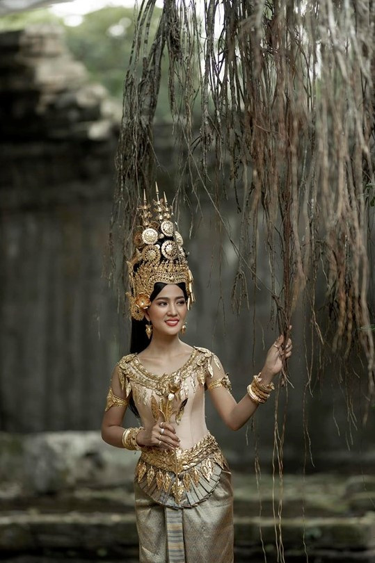
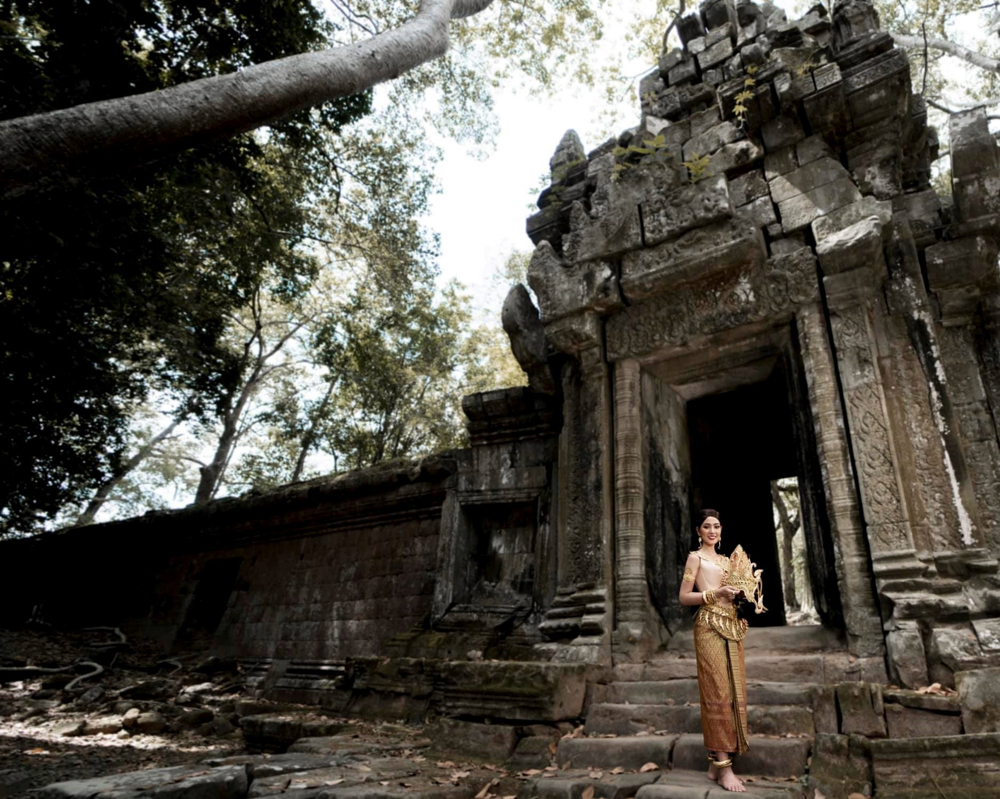
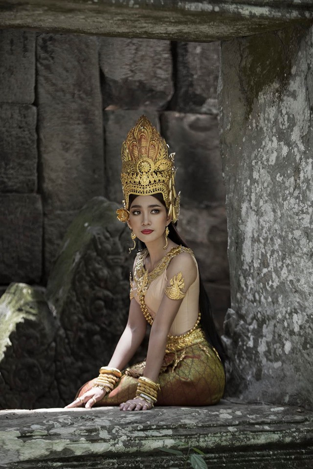
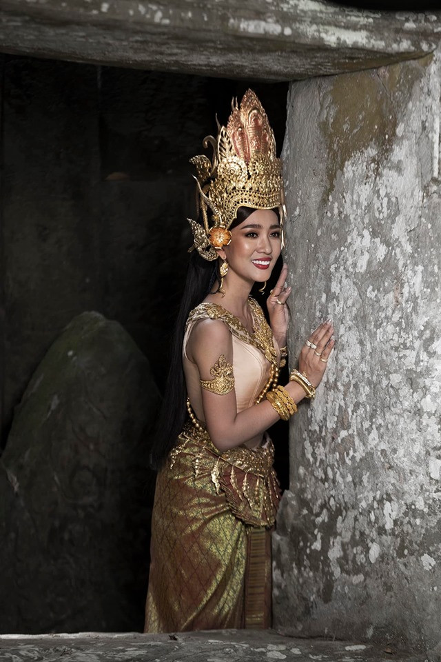
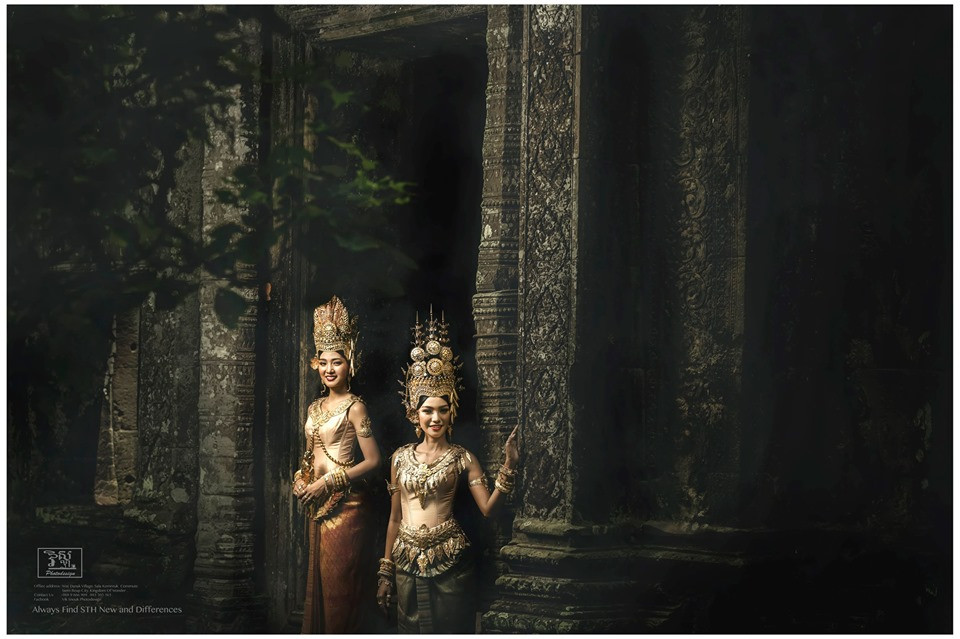
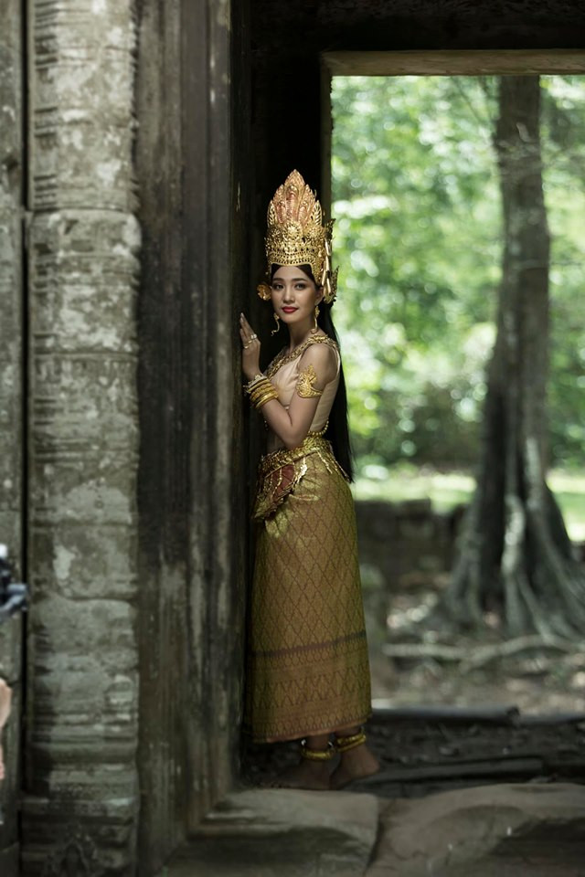
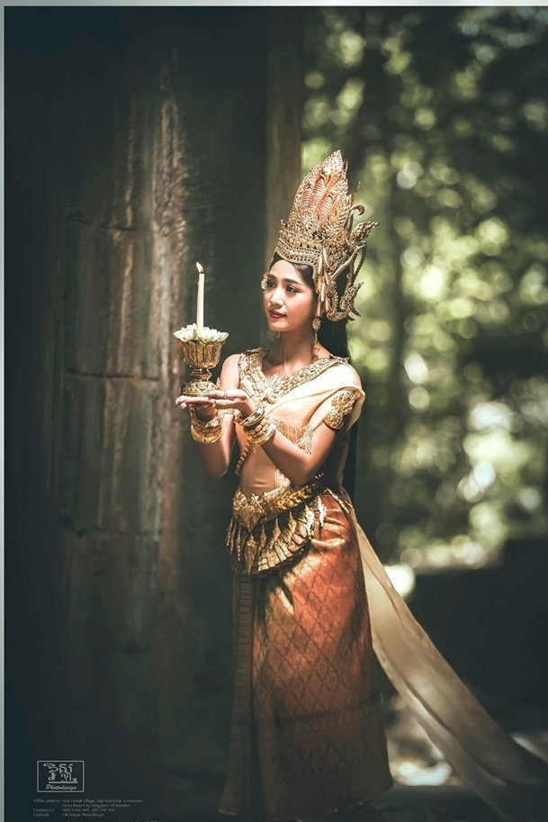

ពុំ
មែនជាលើកដំបូងក្នុងសម្លៀកបំពាក់បែបុរាណទេសម្រាប់តារាសម្ដែង និងជាពិធីការីនីប្រចាំទូរទស្សន៍អាស៊ីអាគ្នេយ៍ ណាក់ ស្រីណា ហើយវាក៏មិនមែនជារូបភាពលើកចុងក្រោយដែរ ដែលនាងបានបង្ហាញភាពស្និទ្ធស្នាល នែបនិត្យកៀកកើយជាមួយនឹងវប្បធម៌ប្រពៃណីដូនតាខ្មែរយើងទាក់ទងទៅនឹងការថតបែបបុរាណ និងគ្រងនូវសម្លៀកបំពាក់ប្រពៃណីបុរាណខ្មែរ។
ជាក់ស្តែងរូបភាពគ្រងនូវឈុតប្រពៃណីស្អាតដូចទេពអប្សរ បានបង្ហោះឡើងតាមរយៈបណ្ដាញសង្គមរបស់ ស្រីណា ជាហូរហែ ដោយសារតែនាងឧស្សាហ៍បង្ហោះរូបភាពថ្មីៗរហូត នៅក្នុងទម្រង់សម្លៀកបំពាក់ប្រពៃណី ដែលលាតត្រដាងពីវប្បធម៌ខ្មែរជាដើម ដើម្បីឲ្យអ្នកជំនាន់ក្រោយជួយថែរក្សា។

ដោយឡែក ស្រីណាបានរៀបរាប់មកកាន់ Sabay ថា ការដក់ជាប់យ៉ាងប់ងុលខ្លាំងជាមួយនឹងអ្វីទាំងអស់នេះ មានហេតុផលតែម្យ៉ាងគត់ គឺព្រោះតែតារាសម្ដែងកូនអ្នកកំពង់ចាមរូបនេះ មានទឹកចិត្តស្រលាញ់ស្មោះស្ម័គ្របំផុតជាមួយនឹងគ្រប់យ៉ាងដែលជាទម្រង់ប្រពៃណីរបស់ខ្មែរ ដែលជាស្នាដៃរបស់បុព្វបុរសខ្មែរយើងបន្សល់ទុកឲ្យកូនចៅជំនាន់ក្រោយ។
ក្នុងនាមនាងជាកូនខ្មែរមួយរូប និងដោយក្តីស្រលាញ់ចង់ជួយថែរក្សា និងចូលរួមផ្សព្វផ្សាយនៅលើបណ្ដាញសង្គម ព្រមទាំងក្នុងសកម្មភាពផ្សេងៗទៀតតាមលទ្ធភាពដែលខ្លួនអាចធ្វើទៅបាន ក៏បង្កើតរូបភាពដ៏ស្រស់សោភា ក្នុងទឹកដីអង្គរដ៏រុងរឿងក្នុងសម្លៀកបំពាក់ ប្រពៃណីបុរាណឈ្មោះ "ព្រះម៉ែនាគ" ស្រស់ស្អាត ទន់ភ្លន់ មានមន្តស្នេហ៍ពិតៗតែម្ដង។
គួរបញ្ជាក់ថា ប្អូនស្រីរបស់ម្ចាស់សម្អាងការ ណុប ដាណេនឹងការចូលរួមចំណែកថែរក្សា អភិរក្ស និងលើកស្ទួយដល់តម្លៃសិល្បៈវប្បធម៌ ទំនៀមទម្លាប់ ប្រពៃណី និងកេរ្តិ៍ដំណែលខ្មែរយើង។ ពិសេស បច្ចុប្បន្នកំពុងតែមមាញឹកខ្លាំងជាមួយអាជីពសិល្បៈ។ ជាក់ស្ដែងនាងក៏មានស្នាដៃថ្មីដែរ តាមរយៈរឿង "ភរិយាសម័យថ្មី" ដែលនឹងត្រៀមចាក់ផ្សាយក្នុងស្ថានីយ៍ទូរទស្សន៍ ភី អិន អិនឆាប់ៗផងដែរ៕
    
ប្រភព៖ រូបភាពយកពី Facebook